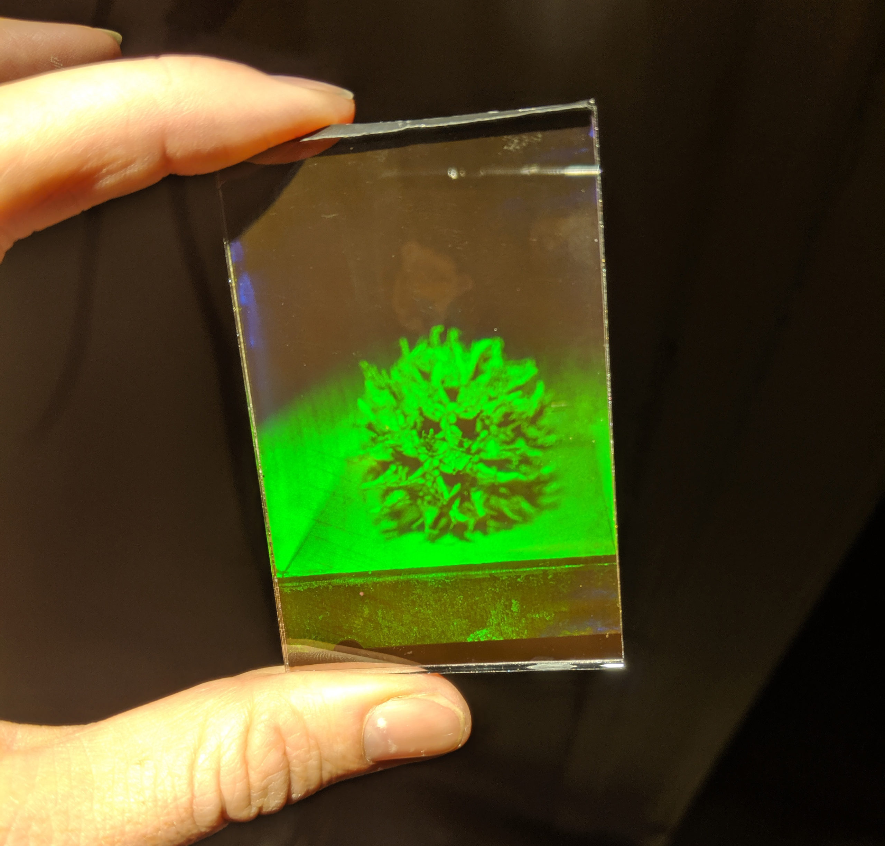
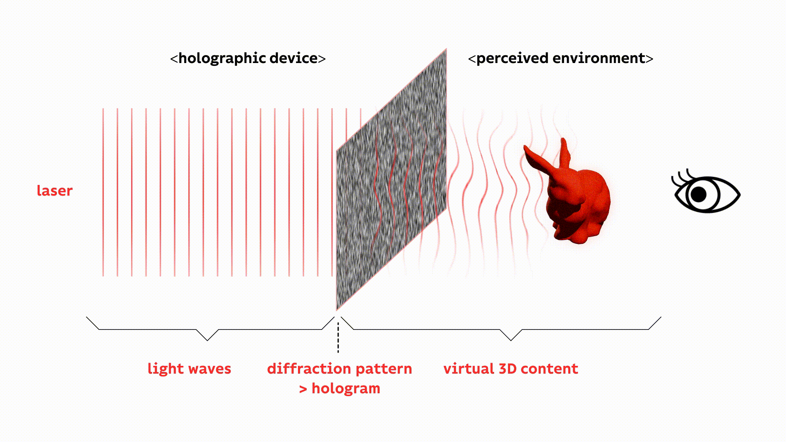
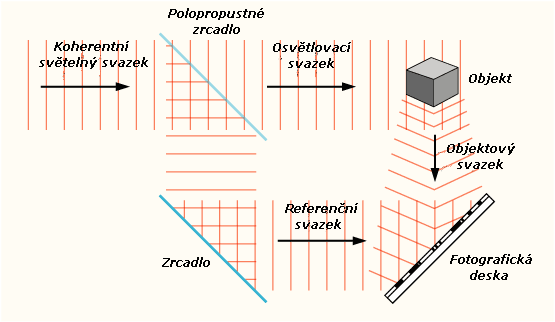
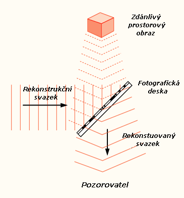
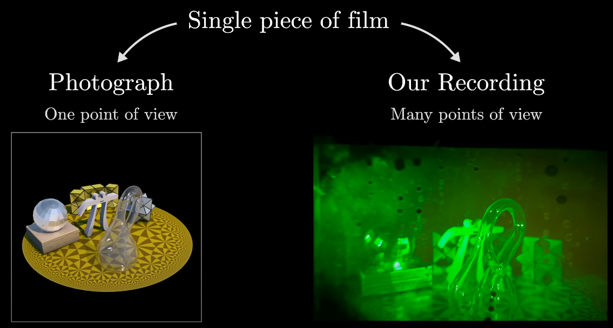
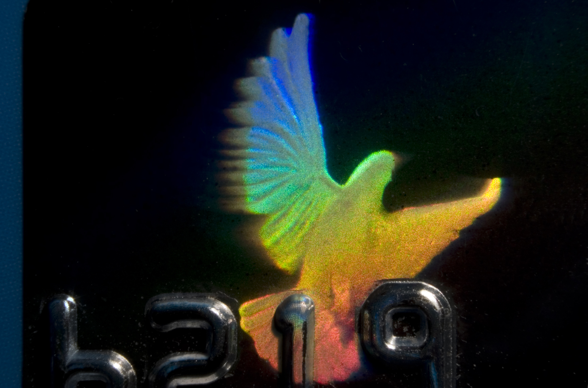
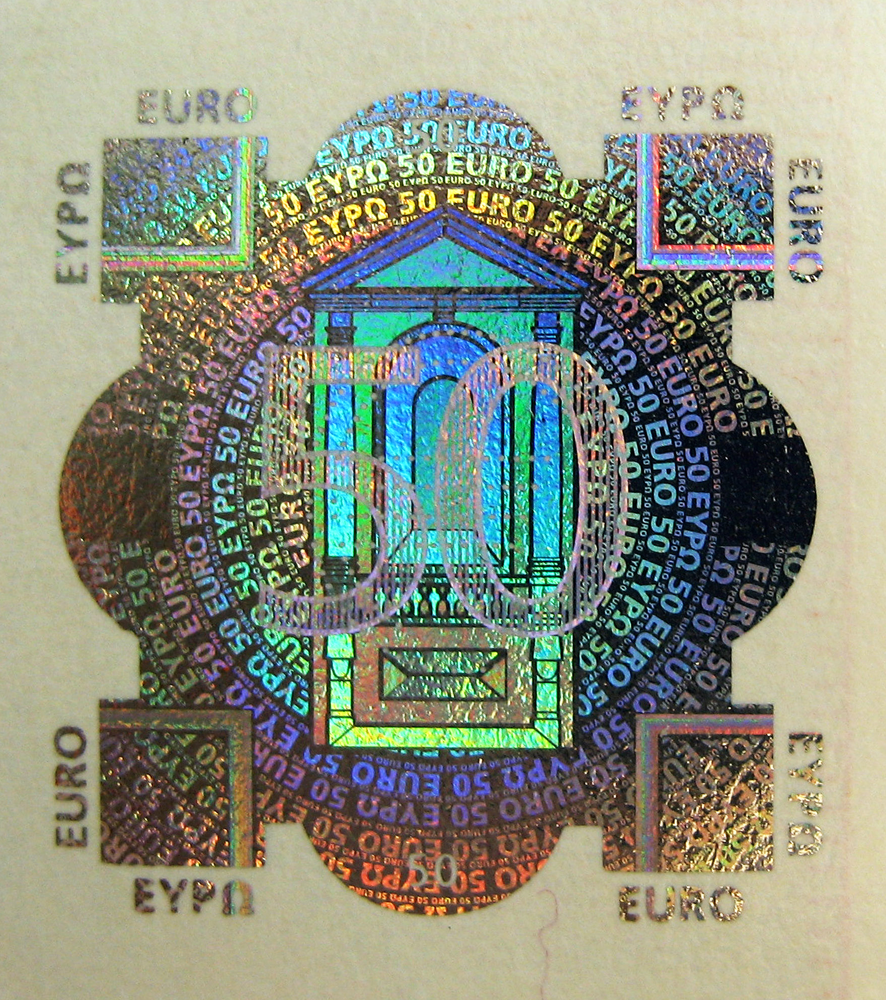
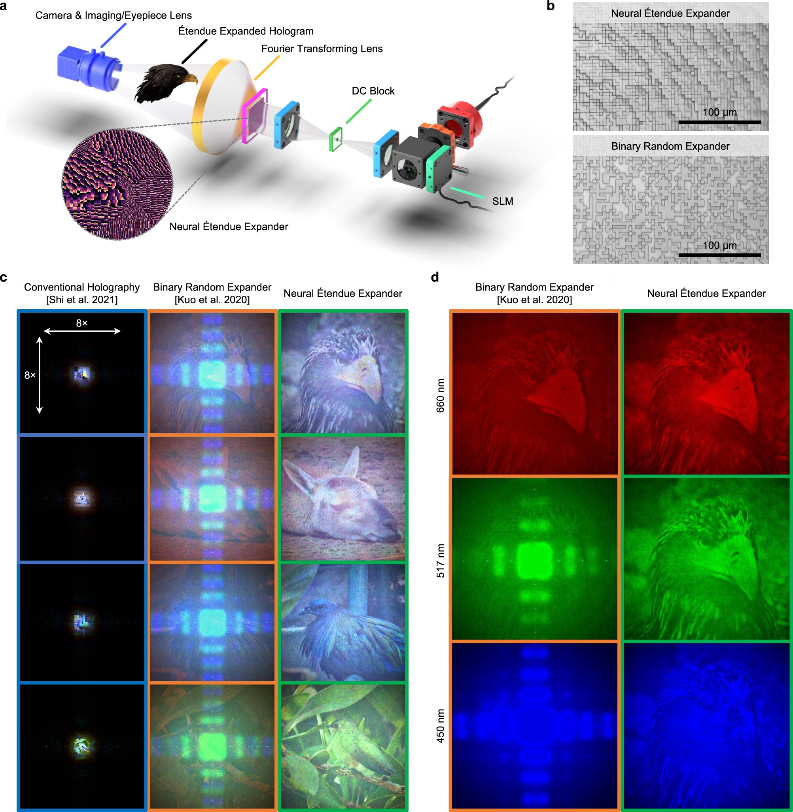

Holografie
Fascinující svět trojrozměrného zobrazení

Co je holografie?
Holografie je vědecká technika, která umožňuje záznam a následnou rekonstrukci trojrozměrného obrazu předmětu. Na rozdíl od fotografie, která zaznamenává pouze intenzitu světla, holografie zaznamenává jak intenzitu, tak i fázi světelné vlny odražené od objektu.
Výsledný záznam, nazývaný hologram, obsahuje mnohem více informací o scéně a umožňuje pozorovateli vidět obraz z různých úhlů, jako by se díval na skutečný předmět.

Základní princip: Záznam
K záznamu hologramu je zapotřebí koherentního světla, typicky z laseru. Paprsek laseru se rozdělí na dva:
- Předmětový paprsek: Osvětluje zaznamenávaný objekt a odráží se od něj směrem k záznamovému médiu (např. fotografická deska).
- Referenční paprsek: Směřuje přímo na záznamové médium bez odrazu od objektu.
Na záznamovém médiu dochází k interferenci (skládání) těchto dvou paprsků. Vzniká složitý interferenční vzor, který kóduje informace o amplitudě i fázi světla z objektu.

Základní princip: Rekonstrukce
Pro zobrazení zaznamenaného obrazu je třeba hologram osvítit rekonstrukčním paprskem, který je ideálně stejný jako referenční paprsek použitý při záznamu (stejná vlnová délka a úhel dopadu).
Když světlo prochází nebo se odráží od interferenčního vzoru na hologramu, dochází k difrakci (ohybu světla). Tento ohyb rekonstruuje původní světelnou vlnu odraženou od objektu.
Pozorovatel pak vidí virtuální trojrozměrný obraz objektu zdánlivě umístěný za hologramem.

Holografie vs. Fotografie
Zatímco oba procesy zachycují obraz pomocí světla, existují klíčové rozdíly:
- Informace: Fotografie zaznamenává pouze intenzitu (jas) světla. Holografie zaznamenává intenzitu i fázi světelné vlny.
- Dimenzionalita: Fotografie je 2D reprezentace. Hologram kóduje 3D informaci a umožňuje paralaxu (změnu pohledu s pohybem pozorovatele).
- Zdroj světla: Fotografie může vzniknout s běžným (nekoherentním) světlem. Holografie vyžaduje koherentní světlo (laser).
- Záznamové médium: Hologramy vyžadují médium s velmi vysokým rozlišením schopné zaznamenat jemné interferenční proužky.
- Rekonstrukce: K prohlížení fotografie stačí běžné světlo. K vidění hologramu je často potřeba specifické osvětlení (např. laser nebo bodový zdroj světla).

Typy hologramů
Existuje několik druhů hologramů, lišících se způsobem záznamu a rekonstrukce:
- Transmisní hologramy: Rekonstrukční paprsek prochází hologramem. Obraz se objevuje za ním. Často vyžadují laser k rekonstrukci.
- Reflexní hologramy (Denisyukovy): Rekonstrukční paprsek se od hologramu odráží. Obraz se objevuje před ním. Mohou být často viditelné v bílém světle (např. bezpečnostní prvky).
- Duhové hologramy: Typ transmisního hologramu upravený tak, aby byl viditelný v bílém světle, i když s duhovými efekty při změně úhlu pohledu. Běžné na kreditních kartách.
- Počítačem generované hologramy (CGH): Interferenční vzor není vytvořen opticky, ale vypočítán počítačem a následně zapsán.
- Digitální holografie: Záznam i rekonstrukce probíhají pomocí digitálních senzorů (CCD/CMOS) a počítačových algoritmů.

Využití holografie
Holografie nachází uplatnění v mnoha oblastech:
- Bezpečnostní prvky: Na bankovkách, kreditních kartách, dokladech totožnosti pro ochranu proti padělání.
- Datové úložiště: Potenciál pro ukládání obrovského množství dat v malém objemu (holografická paměť).
- Umění a reklama: Tvorba unikátních trojrozměrných vizuálních děl.
- Metrologie a nedestruktivní testování: Holografická interferometrie pro měření mikroskopických deformací a vibrací.
- Mikroskopie: Digitální holografická mikroskopie pro 3D zobrazování buněk a tkání bez nutnosti značení.
- Lékařství: Vizualizace dat z CT/MRI jako 3D hologramy, endoskopie.
- Head-Up Displeje (HUD): V letectví a automobilovém průmyslu pro promítání informací do zorného pole řidiče/pilota.

Budoucnost a Závěr
Holografie je stále se rozvíjející obor s obrovským potenciálem. Výzkum směřuje k vytváření dynamických, barevných hologramů v reálném čase, které by mohly způsobit revoluci v komunikaci, zábavě, vzdělávání a mnoha dalších odvětvích.
Výzvy jako výpočetní náročnost, potřeba speciálních zobrazovacích zařízení a omezení velikosti a úhlu pohledu jsou postupně překonávány.
Holografie nám otevírá dveře k plně trojrozměrné vizuální budoucnosti.
